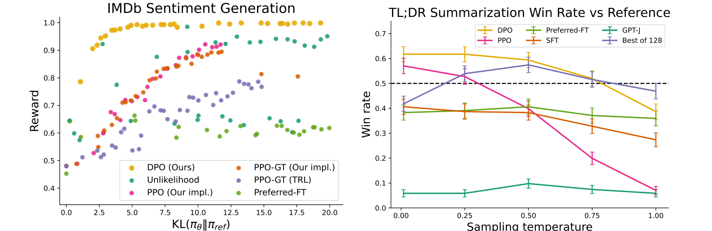
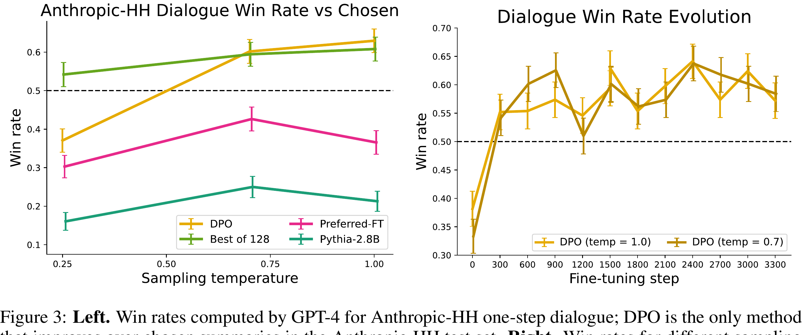
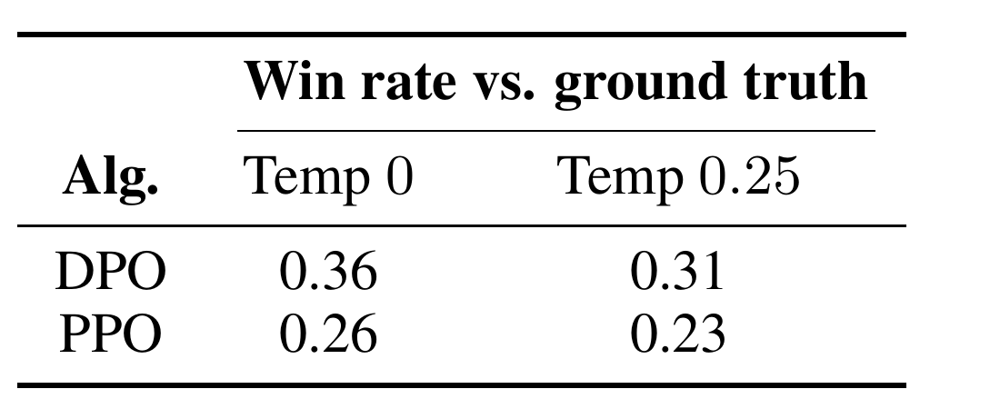
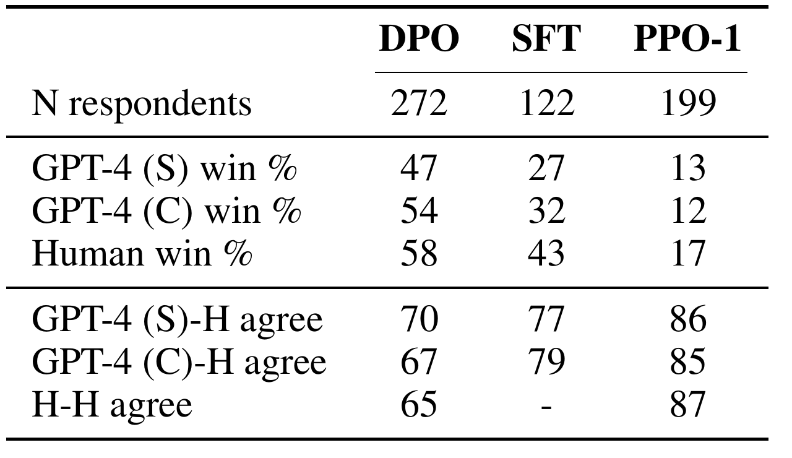

A 60-minute active study session · post-training
From RLHF Pipelines to One Loss
Direct Preference Optimization turns pairwise preferences into a policy-training objective, without fitting a separate reward model or running reinforcement learning in the fine-tuning loop.
1. The problem: preferences are relative
A prompt can have many plausible completions. Asking a labeler for a calibrated numerical reward is hard; asking which of two completions is better is often easier. Let yw be the preferred completion and yl the rejected one for prompt x.
Classic RLHF fits a reward model from these pairs, then trains a policy to maximize that reward while staying near a reference language model. The paper asks a sharper question: if the desired policy and the reward are mathematically linked, must we build the reward model as a separate object?
A preference pair gives a direction - chosen over rejected - but not an absolute score. That missing score is why the classic pipeline inserts a reward model, and why DPO needs a mathematical bridge to remove it.
2. From the original pipeline to DPO
In the paper's RLHF pipeline, SFT comes first; then response pairs are sampled, labeled, and used to fit a reward model; then RL fine-tunes the policy. DPO removes the separately trained reward model and the on-policy RL update, but it still needs offline preference pairs and a frozen reference policy.
Scroll horizontally to read the full source figure.

The shorter pipeline creates a precise question: what must the direct loss remember from reward maximization so that “simpler” does not become “unanchored”?
3. The ingredients: name the players before the derivation
One labeler supplies an ordering; two model roles turn that ordering into a trainable comparison. The trainable policy changes, while the reference policy stays frozen and defines what “more likely than before” means.
| Symbol | Meaning | Intuition |
|---|---|---|
| x | Prompt | The shared context for both candidate completions. |
| yw, yl | Chosen winner and rejected loser | The labeler supplies only their ordering, not an absolute score. |
| πθ(y|x) | Trainable policy | The model being moved by DPO. |
| πref(y|x) | Frozen reference policy | A before-photo and ruler: how plausible was the completion before the update? |
| Policy-to-reference log-ratio | The completion’s relative improvement; DPO subtracts the rejected value from the chosen value. | |
| r(x,y) | Reward | Latent quantity that would explain the preferences. |
| β > 0 | KL/reward trade-off scale | Sets the scale of the policy-to-reward mapping and the logistic margin. |
| σ(z) | Maps a score difference to a preference probability. | |
| Z(x) | Partition function | A prompt-specific normalizer that makes the ideal policy sum to one; it cancels inside a same-prompt pair. |
| DKL(π || πref) | Deviation cost | The rubber-band cost for moving the policy away from the reference. |
Keep these roles distinct. πθ is the model we change. πref is one frozen copy used as the baseline throughout training. r(x,y) is the score that would explain a preference; DPO will avoid storing it as a separately trained model. The remaining symbols become useful only as we meet them.
4. Start with the behavior we want
DPO is not introduced as an arbitrary classifier. It starts with a thought experiment: imagine that we knew a trustworthy reward for every possible answer. For each prompt, we would want a policy that puts more probability on high-reward answers without forgetting how to behave like the reference model:
Read the first term as “seek better answers.” Read the second term as “pay a cost for becoming unlike the reference.” The KL term is a rubber band: reward pulls the model toward better answers; KL resists an implausibly large jump. Here β controls the trade-off: in this original reward-minus-KL objective, a larger β makes staying near the reference more important.
The question that unlocks DPO: if this were the desired behavior, what would its best possible policy look like? The answer lets us replace the reward model instead of training it separately.
5. Solve it once, then make the reward disappear
For the objective above, the paper uses its exact optimal policy. Call it π*: it is the ideal policy we would get if the reward were known. It begins with the reference probability, then multiplies it by a reward-based boost, and finally divides by Z(x) so all answer probabilities still add to one:
For two possible answers, suppose the reference gives A probability 0.8 and B probability 0.2, but B has the higher reward. The reward boost raises B's weight; the normalizer then rescales both weights back into probabilities. B becomes more likely, but it does not erase the reference model. That is the mathematical version of the rubber band.
Now rearrange that solution. The reward can be written using only the relative change from reference probability to optimal-policy probability:
This is the key bridge. A policy that makes an answer more likely than the reference acts as if that answer had higher reward. Z(x) is a shared normalizing factor for every answer to the same prompt. It is hard to calculate across all possible text—but a preference label only compares two answers for one prompt, which is exactly where the shared term disappears.
The Bradley-Terry preference model says that the chance of preferring yw over yl is:
This is a soft version of “higher score wins”: a larger score gap means a more confident predicted preference. Substitute the implicit-reward expression once for the winner and once for the loser.
The two β log Z(x) terms are identical, because winner and loser share prompt x, so they cancel. This is the escape hatch: a comparison does not need an absolute reward or a separately trained reward model. It needs only a relative log-probability improvement: how much the policy favors each completion compared with the reference.
We now replace ideal π* with the real trainable model πθ. For each labelled pair, the sigmoid turns its relative improvement margin into the model’s probability that the winner should beat the loser. Training by maximum likelihood simply means: change πθ to make the human-observed winner/loser labels more probable across the dataset. Taking the negative log gives the loss to minimize:
Winner improves, loser does not
- The chosen answer’s log-ratio is +0.60; the rejected answer’s is +0.10. Both gained support relative to the reference.
- Subtract the rejected gain from the chosen gain: Δ = 0.60 - 0.10 = 0.50.
- With β = 1, the DPO margin is 0.50, so σ(0.50) ≈ 0.622.
- The pair loss is -log(0.622) ≈ 0.474. The ordering is right, but the gradient still asks for a clearer separation.
Both answers get more likely
- The chosen and rejected log-ratios are both +0.60: the policy raised both equally relative to the reference.
- The difference is Δ = 0.60 - 0.60 = 0, regardless of the positive absolute gains.
- For any positive β, the margin stays 0, σ(0) = 0.5, and the pair loss is -log(0.5) ≈ 0.693.
- DPO sees no preference separation. It rewards relative movement toward the chosen answer, not indiscriminate probability inflation.
6. Make the loss executable for a language model
For an LM, a completion log-probability is the sum of conditional token log-probabilities:
Think of each next token as adding a small entry to a running confidence ledger; the completion score is the total. DPO compares whole completions, not just their last tokens.
| Completion | Current sequence log-prob | Reference sequence log-prob | Log-ratio |
|---|---|---|---|
| Chosen completion | -1.5 | -1.9 | +0.4 |
| Rejected completion | -2.0 | -1.6 | -0.4 |
With β=0.5, the margin is 0.5×(0.4-(-0.4))=0.4; σ(0.4)≈0.60 and the per-pair loss is about 0.51.
Predict before revealing: if the current-policy values stay fixed but only the reference values change, can the loss change?
Reveal the answer
Yes. The reference defines which probability shift counts as improvement. Changing either reference log-probability changes its completion’s log-ratio, which can change the margin, preference probability, and loss.
The gradient supplies an adaptive correction
The paper's gradient raises the chosen log-probability and lowers the rejected one, weighted by . Like a tutor spending more time on a clear mistake than on an already-correct answer, a well-ranked pair with margin +2 has weight about 0.12; a wrongly ranked pair with margin -2 has weight about 0.88. This continuous weighting is why DPO is not just chosen/rejected unlikelihood training.
7. Instrument: inspect one DPO preference pair
Before moving the controls, predict: if the current policy over-promotes the rejected answer relative to the reference, should the loss be high or low?
Scroll the scale horizontally; the controls and explanation remain below it.
Margin = 0.50. Preference probability = 0.62; per-pair loss = 0.47. The chosen completion is relatively favored.
Static reading: at the default setting, the chosen completion has a 0.50 larger log-ratio than the rejected completion. With β = 1 this is a positive, but imperfect, preference margin. Moving β while holding both log-ratios fixed is a diagnostic slice, not a complete simulation of training.
Reveal the prediction
High. If the rejected completion has the larger relative improvement, the margin is negative, σ(margin) is below 0.5, and -log σ(margin) increases. Gradient descent responds by raising the chosen likelihood and lowering the rejected likelihood.
8. What the update is really doing
The paper differentiates the loss and finds a useful qualitative story: each pair pushes up and pushes down . Pairs that the implicit reward currently orders wrongly receive more weight. This is why “just maximize the chosen/rejected probability ratio” is not the same algorithm: the logistic form supplies a data-dependent weight.
Misconception check
“DPO removes the reference model.”
No. It removes the separately trained reward model and the RL loop, but the frozen reference policy appears inside every log ratio. It anchors the comparison.
“DPO simply teaches the policy to copy every chosen response.”
No. A pair asks for a relative ordering. The loss judges changes relative to πref, and it explicitly contrasts chosen against rejected completions.
“The derivation proves DPO works for arbitrary preference data.”
No. The central equivalence uses a Bradley-Terry-style preference model and the KL-regularized objective. The paper also assumes appropriate support and a positive β.
9. What the original experiments actually test
The paper separates controlled optimization from real preference data. Controlled sentiment generation uses IMDb prefixes, GPT-2-large, and classifier-created preference pairs, so reward and sequence-level KL are measurable directly. TL;DR summarization evaluates GPT-J policies against reference summaries with GPT-4 as a proxy judge. Single-turn dialogue uses Anthropic Helpful and Harmless data and Pythia-2.8B; the experiments reach models up to 6B parameters.
Scroll horizontally to read both result panels at a legible scale.

Scroll horizontally to read the full source figure.

Scroll horizontally to read the source table.

Scroll horizontally to read the source table.

- Read the axes before the ranking. On the left, reward alone is not enough: a method that moves much farther from πref pays more KL. The relevant object is a reward-at-comparable-KL frontier.
- Read the evaluation source. The left reward comes from the sentiment classifier used to construct the controlled preferences. The right win rate comes from a particular concise GPT-4 judging prompt against test-set reference summaries.
- Read uncertainty and scope. The right-side points include error bars, so small visual gaps should not be over-read. The plot compares these methods, models, temperatures, and prompts; it is not a universal league table.
Interpretation exercise: Why is “61%” not enough by itself?
It is a win rate under a particular task, baseline, temperature, and judging prompt. The paper observes that a simple GPT-4 prompt favored longer repetitive summaries, and uses a concise prompt for its main results.
10. Reward equivalence, assumptions, and limits
Preferences cannot identify an absolute reward. If and differ only by a prompt-dependent , Bradley-Terry and Plackett-Luce comparisons are unchanged because the term cancels within a pair. The paper shows those equivalent rewards also induce the same KL-regularized optimal policy.
DPO selects a normalized representative:
That is the precise sense in which the language model is “secretly” a reward model; it does not find a unique absolute human reward.
DPO removes on-policy sampling during its optimization loop, not sampling altogether. Preference completions must already exist, and every update needs both policy and frozen-reference log-probabilities. That second forward pass is simpler than maintaining a reward model plus an RL loop, but it is not free.
The paper’s out-of-distribution CNN/DailyMail result is encouraging but narrow: one shifted summarization dataset and one automated judge. The authors explicitly leave comprehensive generalization, reward over-optimization, self-labeling on unlabeled prompts, scaling beyond 6B parameters, and evaluator prompt sensitivity for future work.
11. Evidence and scope
The authors evaluate DPO on sentiment control, TL;DR summarization, and single-turn dialogue with models up to 6B parameters. They report that DPO matches or exceeds their PPO-based RLHF baselines on these settings, with stronger sentiment control and improved response quality in their summarization and dialogue evaluations. Treat this as scoped empirical evidence, not a universal ordering of alignment methods.
No separate reward-model fitting stage; no policy sampling during the DPO fine-tuning loop; and a single classification-style objective on an offline preference dataset.
Preference labels can be biased, inconsistent, or underspecified. The paper asks how DPO generalizes out of distribution, how reward over-optimization appears, and how it scales beyond the tested 6B-parameter models. Its automated evaluation is also prompt-sensitive.
12. Active recall
Why does the partition function disappear?
Bradley-Terry uses a difference of two rewards for the same prompt. The prompt-only term β log Z(x) appears in both rewards and cancels.
What is the one scalar that DPO feeds into the sigmoid?
β times the difference between the chosen and rejected log probability ratios:
What does a negative margin diagnose?
Relative to the reference, the policy has improved the rejected completion more than the chosen completion. The loss is high and the gradient corrects that ordering.
What does DPO eliminate, and what does it retain?
It eliminates the explicit reward model and RL policy-optimization loop. It retains a reference policy, offline preference pairs, a statistical preference model, and ordinary gradient-based policy training.
Connect it to your mental map
DPO extends the collection’s language-model branch from architecture into post-training. Keep three jobs distinct: pretraining learns broad next-token statistics; supervised fine-tuning imitates demonstrations; preference optimization learns a relative ordering among possible completions.
- Attention Is All You Need
The Transformer determines how the policy represents and predicts text. DPO changes the training objective, not the attention architecture. - Human-level control through deep reinforcement learning
DQN learns from scalar rewards and Bellman targets. DPO starts from an offline pairwise ordering and turns it into a classification-style policy loss. - Adam: A Method for Stochastic Optimization
Adam can minimize the DPO loss, but it does not define the preference signal. DPO supplies the objective; Adam supplies parameter updates.
Takeaway
A DPO update does not need to name a reward model. It asks one precise question: compared with a stable reference, did the policy move probability toward the response people chose and away from the one they rejected? Under the paper’s preference model, that relative movement is enough to train the policy directly.